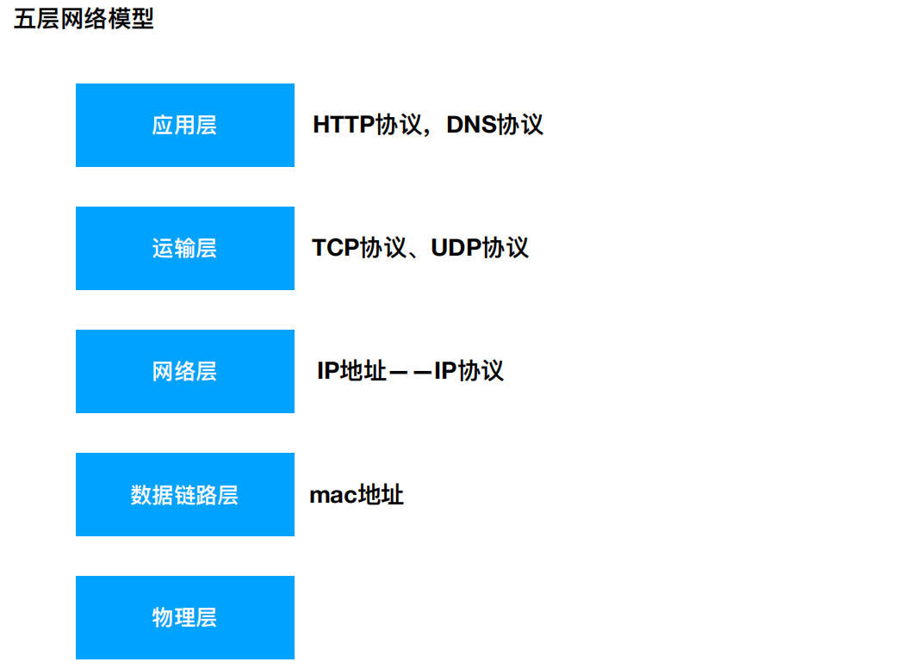
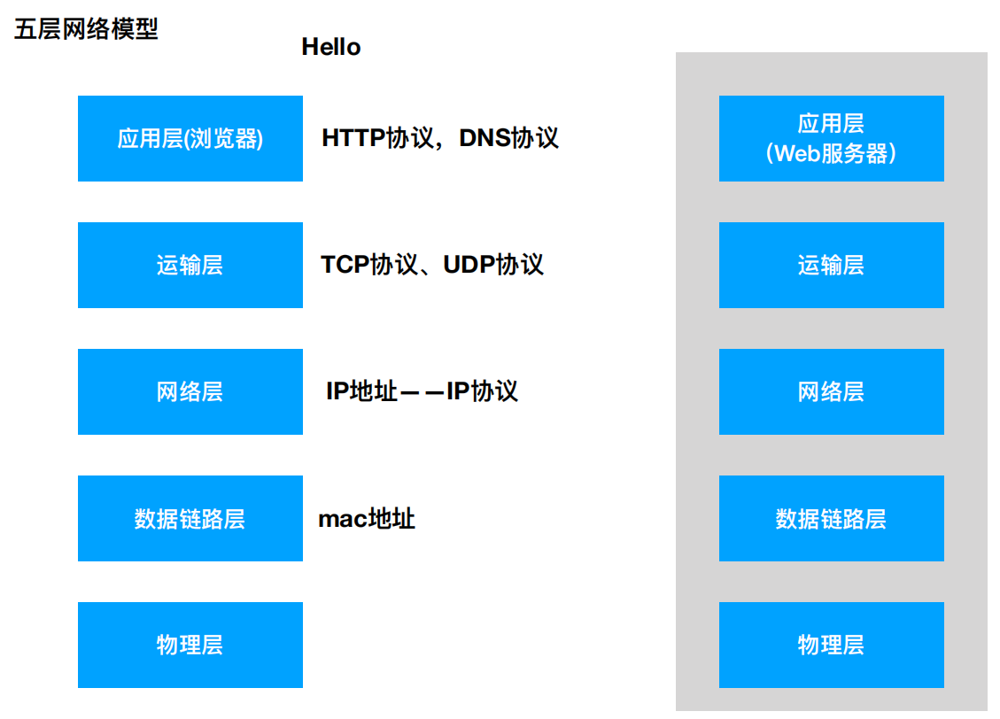

一、五层网络模型
后两层都是硬件层面的，跟软件无关

应用层：HTTP协议、DNS协议
运输层：TCP协议、UDP协议
TCP：可靠传输协议，给服务器传递消息之后，服务器会告诉浏览器消息是否收到，如果没收到，浏览器会继续发送消息，直到服务器收到
UDP：给服务器传递消息之后就不管了，不管服务器是否收到
- 网络层：IP协议
- IP协议有两个字段，一个存放自己的地址，一个存放对方地址
二、七层网络模型
- 应用层(表示层 会话层) 传输层 网络层 数据链路层 物理层
- 表示层：数据的表示、安全、压缩
- 会话层：建立、管理、终止会话(对应主机进程，指本地主机与远程主机正在进行会话)
三、浏览器向服务器请求数据的过程
- 在百度搜索框中输入hello，写出请求数据的过程
- 浏览器给指令加上HTTP协议(请求头)，交给操作系统
- 在操作系统上加上TCP\IP协议，使指令能够通过操作系统的网络往外发
- 再往下加上数据链路层协议
- 再往下加上物理层协议(只有加上物理层协议，数据才能在物理器件上传输)
- 这样数据就发到了百度的服务器上
- 百度服务器从物理层依次向上解析
- 最终拿到在浏览器上输入的指令
